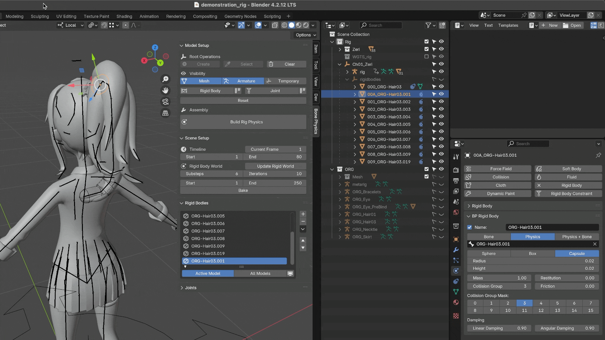

Rigid Body
Parameters
This add-on leverages Blender’s built-in Rigid Body system for physics simulation, so all parameters function exactly as they do in Blender’s native Rigid Body settings.
If you are already familiar with these parameters, you may skip this section.
Otherwise, the following chapters provide a practical overview of the key parameters along with real-world usage tips.
Mass
The Mass parameter defines the inertia of an object, i.e. its resistance to acceleration.
Acceleration response: With the same applied force, heavier objects accelerate more slowly.
Collision behavior: A high-mass object will push lighter ones aside while being barely affected itself (momentum conservation).
Gravity: Mass does not change the free-fall speed (gravity is constant), but it does affect impact forces.
Rotational inertia: Heavier objects are also harder to rotate due to larger inertia tensors.
Tip
The default value of 1.0 is neutral — you can treat it as a baseline and adjust other objects relative to it.
Friction
Friction controls how much resistance occurs when a Rigid Body slides across another surface.
Higher values means more resistance, objects slow down faster.
Lower values means smoother surfaces, objects slide more easily.
Blender uses its built-in Bullet physics engine to simulate Rigid Body dynamics. The engine computes the combined friction between two objects using Bullet’s default formula:
In practice, this means that if either object has a very low friction value, the resulting combined friction will also be low. Both objects must have sufficiently high friction values for the interaction to provide strong resistance.
Tip
0.0: ice-like surface, endless sliding.0.2: slippery floor, slow stop.0.5: typical wood or desktop friction.0.8: rubber-like, objects stop almost immediately.>1.0: extreme values, objects barely move without a strong push.
Bounce
The Bounce parameter defines how much energy is preserved in a collision, also known as the Coefficient of Restitution (e). It only affects motion along the collision’s normal direction, not along the surface.
Tip
0.0: perfectly inelastic — the object sticks to the surface (like clay).1.0: perfectly elastic — the object bounces back with the same speed (idealized).0.0 ~ 1.0: partially elastic, some energy is lost.
Linear Damping
Linear Damping simulates drag forces (like air resistance) that slow down an object’s motion when no external force is applied. It gradually reduces the object’s linear velocity.
Tip
0.0: no damping — the object slides forever, like on ice.0.04(default): slight drag, objects slowly come to rest.0.3: noticeable drag, objects stop within a few seconds.1.0: immediate stop, objects lose velocity almost instantly.
Angular Damping
Angular Damping controls how quickly an object’s rotation slows down. It works the same way as Linear Damping, but affects angular velocity instead of linear velocity.
Tip
0.0: top-like spinning, never slows down.0.1(default): slight rotational drag, spin fades over time.0.3: strong drag, object stops rotating in a few seconds.1.0: rotation stops almost immediately.
Add Rigid Body
Quick Add
Select the Armature and switch to Pose Mode.
Choose the bone(s) that should receive a Rigid Body.
Click the ➕ button
Configure the properties and press OK to finish.
Note
When no bone is selected in Pose Mode, the add-on creates an auxiliary Rigid Body for the model.
You can adjust the Rigid Body Properties at any time in the Rigid Body Properties Panel.
For Rigify armatures, it is recommended to add Rigid Bodies to the DEF bones. With other rigs or custom armatures, ensure that the bones involved in the physics simulation have corresponding control bones, allowing them to override the physics simulation and prevent mesh penetration.
Save Presets
You can save presets for reuse. This workflow is very useful in practice, as it can save a significant amount of time!

Rigid Body Properties
name: English name of the Rigid Body.
collision_group_number: Collision group assigned to this object.
collision_group_mask: Groups that this object should not collide with.
rigid_type:
Bone: The Rigid Body follows the orientation of the attached bone.
Physics: The bone’s transform is fully driven by the Rigid Body.
Physics + Bone: The bone’s position follows its parent, but its rotation is copied from the Rigid Body.
rigid_shape: Collision shape type.
axis_outward: Local bone axis that points outward.
size: Dimensions of the collision shape, scaled relative to the target bone length.
mass: See Mass.
friction: See Friction.
bounce: See Bounce.
linear damping: See Linear Damping.
angular damping: See Angular Damping.
Warning
When modifying Rigid Body properties, always use the add-on’s Rigid Body Properties Panel. Do not edit them through Blender’s built-in interface.
Note
- Name
$nameis a placeholder that will use the English name of the target bone as the Rigid Body’s name.
- Physics vs Physics + Bone
Physics: The bone’s location and rotation are completely determined by the Rigid Body. The Rigid Body may move the bone away from the Armature.
Physics + Bone: The bone’s position is still driven by its parent, but its rotation is copied from the Rigid Body. This prevents the bone from detaching while still inheriting the physical simulation results.
- axis_outward
This property is optional and mainly serves as an optimization. It is especially important for Box-Shaped Rigid Bodies, such as those used for simulating skirts.
While the simulation can still run without setting it, ignoring this property may lead to unexpected behavior.
Setting it correctly ensures the Rigid Body have the proper initial orientation (commonly Y-axis pointing outward). This orientation also affects the initial rotation of joints when adding constraints between Rigid Body pairs.
With correct initial orientation, the skirt Rigid Body and Constraints form a consistent set, producing predictable and smooth simulation results.
See TODO
- size
In the preset panel, all shapes have three components (
x, y, z). However, the number of components required varies by shape:Sphere: only radius (use the
xcomponent).Box: width, height, depth (use
x, y, z).Capsule: radius (hemisphere) and height (use
x, y).
It is recommended to keep the default values in the preset panel and make any necessary fine-tuning in the Rigid Body Properties Panel for more precise control.
Rigid Body Properties Panel
The Rigid Body Properties Panel is where you can view and edit rigid body attributes. It can be found under the Physics tab in Blender.
Warning
For consistency and to avoid unintended errors, all rigid body attributes must be modified via the add-on’s Rigid Body Properties Panel.
Note
Some properties can still be edited through Blender’s default UI, and these actions cannot be blocked. For example:
Physical parameters such as Mass and Friction in the Physics tab.
Scaling a rigid body in the 3D Viewport with the S key.
However, editing through Blender’s defaults will bypass the add-on’s callbacks. These callbacks may perform important tasks such as updating data, reassigning materials, or adjusting constraints.
Example - Scaling in the 3D Viewport:
Using S only changes the visible mesh; the internal size data remains unchanged. This can cause the visual mesh and the collision shape to diverge, leading to clipping or misalignment. Since the Bullet engine requires ideal mathematical shapes (sphere, box, capsule, etc.), manual scaling can easily produce invalid results.
Rigid Body List
The Rigid Body List shows all rigid bodies in the current scene. By default, it filters by Active Model, displaying only the rigid bodies of the currently selected model. To view rigid bodies from all models, change the filter to All Models.

Reordering List Items
You can reorder list items using the ⬆ and ⬇ buttons, or through the right-side dropdown menu options: Move To Top and Move To Bottom.

Error Icon Indicators
Missing Physics
A list item will show a “Missing Physics” warning when its rigid body has no Rigid Body Settings component. To fix this, use the Add Rigid Body button in the Rigid Body Properties Panel to restore the settings.
Missing Bone
A list item will show a “Missing Bone” warning when its rigid body has no assigned bone. The missing bone can be reassigned in the Rigid Body Properties Panel.

Select Rigid Bodies
TODO:
Remove Rigid Body
Select a rigid body in the 3D View, the Rigid Body List, or the Outliner, then click the ➖ button to remove it.